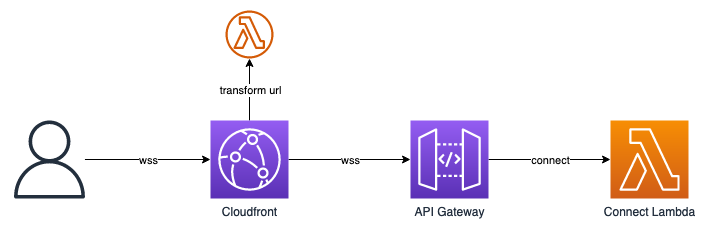

Converting path parameters to query string parameters for API Gateway websocket APIs
2023-06-09TL;DR
Deploy instructions here
Full yaml template here
Why
API Gateway websocket APIs don't support path parameters after the stage in their URL. The simple solution would be to avoid using path parameters, but sensible decisions like that aren't always an option.
URLs like wss://abcdefghij.execute-api.eu-west-2.amazonaws.com/Prod/hello will result in a 403 Forbidden status code when connecting with a tool like wscat. The stage in this case is Prod, and I've added a path parameter hello.
On one project, the team I was on was building a Websocket API on AWS that had to adhere to an existing standard; we were given an API contract that we had to build to that included the user's auth token as a path parameter on the end of the URL. This was fine for the existing legacy solution we were replacing, but presented an issue with our new serverless solution.
Eventually, I was pointed towards CloudFront functions by a friend, and I spent the next weekend hacking to create a workaround for our issue.
Solution

The solution I worked on involved creating a CloudFront distribution that the user connected to, with a CloudFront function to take any path parameters and convert them to query string parameters for API Gateway to handle.
wss://abcdefghijklmn.cloudfront.net/one/two/three
↓
wss://abcdefghij.execute-api.eu-west-2.amazonaws.com/Prod?path=one&path=two&path=three
The event received in the Connect Lambda will look like the following json
{
"headers": { ... },
"isBase64Encoded": false,
"multiValueHeaders": { ... },
"multiValueQueryStringParameters": {
"path": [
"one",
"two",
"three"
]
},
"queryStringParameters": {
"path": "three"
},
"requestContext": { ... }
}
Using the template
Requirements
Optional tools
- wscat (Install instructions) (for testing)
- cfn-lint (Install instructions) (for template validation)
$ aws --version
aws-cli/2.11.20 Python/3.11.3 Darwin/22.5.0 exe/x86_64 prompt/off
$ sam --version
SAM CLI, version 1.84.0
$ wscat --version
5.2.0
$ cfn-lint --version
cfn-lint 0.77.5
Build and deploy
Copy the full template from the bottom of this article, or copy the yaml from the Github Gist.
Save the contents into a template.yaml file in whichever directory you want to use as a project directory. This template should serve as a good starting point for any serverless websocket solution with AWS.
The template can be checked for errors with cfn-lint.
$ cfn-lint template.yaml
Now the template can be built, and deployed to AWS. For the first run, the sam deploy command will need to be quite verbose, but for subsequent deploys the process is a lot simpler.
sam build
# the stack name can be replaced with whatever you want
sam deploy --stack-name MyWebsocketApi --capabilities CAPABILITY_NAMED_IAM --guided
# I left all values as default, and saved the output to samconfig.toml
# this makes subsequent deploys much easier
# for future deploys
sam build && sam deploy
Assuming the build and deploy succeed, you should see some output with the API Gateway and CloudFront urls
sam build && sam deploy
...
CloudFormation outputs from deployed stack
--------------------------------------------------------------------------------------------------------------------------
Outputs
--------------------------------------------------------------------------------------------------------------------------
Key CloudFrontUrl
Description Cloudfront URL
Value wss://abcdefghijklmn.cloudfront.net
Key ServerApi
Description Api Gateway endpoint URL
Value wss://abcdefghij.execute-api.eu-west-2.amazonaws.com/Prod
--------------------------------------------------------------------------------------------------------------------------
Successfully created/updated stack - MyWebsocketApi in eu-west-2
Now the endpoint can be tested with wscat
$ wscat -c wss://abcdefghijklmn.cloudfront.net/one/two/three
Connected (press CTRL+C to quit)
>
After checking the log group for the Connect Lambda, I can see the query strings that the CloudFront Function have transformed.
{
"headers": { ... },
"isBase64Encoded": false,
"multiValueHeaders": { ... },
"multiValueQueryStringParameters": {
"path": [
"one",
"two",
"three"
]
},
"queryStringParameters": {
"path": "three"
},
"requestContext": { ... }
}
API Gateway
ApiGateway:
Type: "AWS::ApiGatewayV2::Api"
Properties:
Name: !Sub "${AWS::StackName}-wss-api"
ProtocolType: "WEBSOCKET"
RouteSelectionExpression: "\\$default"
Stage:
Type: "AWS::ApiGatewayV2::Stage"
Properties:
StageName: "Prod"
AutoDeploy: true
ApiId: !Ref "ApiGateway"
I've defined a simple websocket API, with a Prod stage that deploys every time the API changes.
I discovered the AutoDeploy option for the stage very recently, and it makes the template a lot simpler than manually defining deployments. I've had a number of issues with routes not being added or updated until API Gateway is manually deployed in the past.
Lambda
Initially I hadn't implemented any routes for API Gateway, but found that I was unable to deploy without at least one route complete. This also made it easier to verify my CloudFront Function was working correctly, as Lambda produced logs that can be checked in CloudWatch.
ConnectFunction:
Type: "AWS::Serverless::Function"
Properties:
Runtime: "python3.10"
Timeout: 30
Architectures:
- "arm64"
MemorySize: 256
Role: !GetAtt "LambdaRole.Arn"
Handler: "index.handler"
InlineCode: |
def handler(event, context):
print(event)
return {'statusCode': 200}
I've added a connect lambda with some inline code that logs the received event, then returns a success status code so that the user can connect to the websocket API. I've used Python because I like Python, it runs quickly with very little memory, and it's one of the runtimes that supports InlineCode.
There are also entries in the full template at the bottom of the post to give the lambda permissions to write logs to CloudWatch, and permissions to allow API Gateway to invoke the lambda. I've defined the CloudWatch log group in the CloudFormation template too, so that it gets cleared down with the rest of the stack if/when the stack is deleted. (No one wants to discover hundreds of development log groups left behind).
The route and the integration are required to hook the Lambda up to API Gateway.
CloudWatch
CloudWatch accounts for the majority of the complexity in this post, it's a bit of a large lump of yaml - apologies.
Documentation for CloudFront Functions is a lot better than it used to be.
CloudFrontDist:
Type: "AWS::CloudFront::Distribution"
Properties:
DistributionConfig:
Origins:
- Id: !Sub "${AWS::StackName}-cloudfront-origin"
DomainName: !Sub "${ApiGateway}.execute-api.${AWS::Region}.amazonaws.com"
OriginPath: !Sub "/${Stage}"
CustomOriginConfig:
HTTPSPort: 443
OriginProtocolPolicy: "https-only"
DefaultCacheBehavior:
ViewerProtocolPolicy: "https-only"
TargetOriginId: !Sub "${AWS::StackName}-cloudfront-origin" # must be the same as the origin defined above
CachePolicyId: "4135ea2d-6df8-44a3-9df3-4b5a84be39ad" # Managed-CachingDisabled
OriginRequestPolicyId: !Ref "CloudFrontOriginRequestPolicy"
FunctionAssociations:
- EventType: "viewer-request"
FunctionARN: !GetAtt "CloudFrontFunction.FunctionMetadata.FunctionARN"
Enabled: true
IPV6Enabled: false
CloudFrontOriginRequestPolicy:
Type: "AWS::CloudFront::OriginRequestPolicy"
Properties:
OriginRequestPolicyConfig:
Name: !Sub "${AWS::StackName}-cloudfront-orp"
HeadersConfig:
HeaderBehavior: "whitelist"
Headers:
- "Sec-WebSocket-Key"
- "Sec-WebSocket-Version"
- "Sec-WebSocket-Protocol"
- "Sec-WebSocket-Accept"
QueryStringsConfig:
QueryStringBehavior: "all"
CookiesConfig:
CookieBehavior: "none"
CloudFrontFunction:
Type: "AWS::CloudFront::Function"
Properties:
Name: !Sub "${AWS::StackName}-cloudfront-function"
AutoPublish: true
FunctionCode: |
function handler(event) {
var request = event.request;
var re = /^(.*?\/)([^.]+)$/;
var match = re.exec(request.uri);
if (match) {
request.uri = match[1];
request.querystring.path = {
'multiValue': match[2].split('/').map(p => { return {'value': p} })
};
}
return request;
}
FunctionConfig:
Comment: "Change path parameters to query string"
Runtime: "cloudfront-js-1.0"
API Gateway is setup as the sole origin for CloudFront, all traffic must be over HTTPS (which WSS is built on top of), and caching has been disabled through the cryptic looking DefaultCacheBehaviour. You can read the documentation for the caching to see where 4135ea2d-6df8-44a3-9df3-4b5a84be39ad came from.
When a user initially tries to connect to CloudFront, the CloudFrontFunction will execute to modify the request.
The OriginRequestPolicy restricts connections to websockets only, and from memory does very little else.
The CloudFrontFunction is the star of the show here, and was also the part that took the longest to get right.
There is an editor in the AWS Console that allows you modify and test your function, but if any part of your test parameters are incorrect it can be very difficult to work out why the function works in testing but not live.
The part that initially caught me out was that the event.request.uri doesn't include the CloudFront URL, so if the user visits wss://abcdefghijklmn.cloudfront.net/one/two/three the uri will be /one/two/three. The inline function above will then set the uri to /, and move the path parameters into query string parameters.
Currently, the only way to programatically deploy a CloudWatch Function is to include the javascript code in the template like this. I'd prefer to be able to work with Python, but it's been about 18 months since I first worked on this, and cloudfront-js-1.0 is still the only available runtime. cloudfront-js-1.0 is fully compliant with ES 5.1, with a few extras tacked on by AWS.
There is now decent documentation for the event structure in CloudFront Functions, and a basic guide to writing CloudFront Functions. Both are helpful, but feel like they're missing some details around multi-value query strings.
As a warning, CloudFront functions seem to take a few minutes to deploy every time they're changed, so I'd recommend trying to keep changes to a minimum.
Full template
Also avaiable from this Github gist
AWSTemplateFormatVersion: "2010-09-09"
Transform: "AWS::Serverless-2016-10-31"
Resources:
ApiGateway:
Type: "AWS::ApiGatewayV2::Api"
Properties:
Name: !Sub "${AWS::StackName}-wss-api"
ProtocolType: "WEBSOCKET"
RouteSelectionExpression: "\\$default"
Stage:
Type: "AWS::ApiGatewayV2::Stage"
Properties:
StageName: "Prod"
AutoDeploy: true
ApiId: !Ref "ApiGateway"
LambdaRole:
Type: "AWS::IAM::Role"
Properties:
RoleName: !Sub "${AWS::StackName}-lambda-role"
AssumeRolePolicyDocument:
Version: "2012-10-17"
Statement:
- Effect: "Allow"
Principal:
Service:
- "lambda.amazonaws.com"
Action:
- "sts:AssumeRole"
LambdaPolicy:
Type: "AWS::IAM::Policy"
Properties:
PolicyName: !Sub "${AWS::StackName}-lambda-policy"
PolicyDocument:
Version: "2012-10-17"
Statement:
- Effect: "Allow"
Action:
- "logs:CreateLogGroup"
- "logs:CreateLogStream"
- "logs:PutLogEvents"
Resource: "*"
Roles:
- !Ref "LambdaRole"
ConnectFunction:
Type: "AWS::Serverless::Function"
Properties:
Runtime: "python3.10"
Timeout: 30
Architectures:
- "arm64"
MemorySize: 256
Role: !GetAtt "LambdaRole.Arn"
Handler: "index.handler"
InlineCode: |
def handler(event, context):
print(event)
return {'statusCode': 200}
ConnectFunctionLogGroup:
Type: "AWS::Logs::LogGroup"
Properties:
LogGroupName: !Sub "/aws/lambda/${ConnectFunction}"
RetentionInDays: 30
ConnectInvokePermission:
Type: "AWS::Lambda::Permission"
DependsOn:
- "ApiGateway"
Properties:
Action: "lambda:InvokeFunction"
FunctionName: !Ref "ConnectFunction"
Principal: "apigateway.amazonaws.com"
ConnectRoute:
Type: "AWS::ApiGatewayV2::Route"
Properties:
ApiId: !Ref "ApiGateway"
RouteKey: "$connect"
OperationName: "ConnectRoute"
Target: !Sub "integrations/${ConnectIntegration}"
ConnectIntegration:
Type: "AWS::ApiGatewayV2::Integration"
Properties:
ApiId: !Ref "ApiGateway"
IntegrationType: "AWS_PROXY"
IntegrationUri: !Sub "arn:aws:apigateway:${AWS::Region}:lambda:path/2015-03-31/functions/${ConnectFunction.Arn}/invocations"
CloudFrontDist:
Type: "AWS::CloudFront::Distribution"
Properties:
DistributionConfig:
Origins:
- Id: !Sub "${AWS::StackName}-cloudfront-origin"
DomainName: !Sub "${ApiGateway}.execute-api.${AWS::Region}.amazonaws.com"
OriginPath: !Sub "/${Stage}"
CustomOriginConfig:
HTTPSPort: 443
OriginProtocolPolicy: "https-only"
DefaultCacheBehavior:
ViewerProtocolPolicy: "https-only"
TargetOriginId: !Sub "${AWS::StackName}-cloudfront-origin" # must be the same as the origin defined above
CachePolicyId: "4135ea2d-6df8-44a3-9df3-4b5a84be39ad" # Managed-CachingDisabled
OriginRequestPolicyId: !Ref "CloudFrontOriginRequestPolicy"
FunctionAssociations:
- EventType: "viewer-request"
FunctionARN: !GetAtt "CloudFrontFunction.FunctionMetadata.FunctionARN"
Enabled: true
IPV6Enabled: false
CloudFrontOriginRequestPolicy:
Type: "AWS::CloudFront::OriginRequestPolicy"
Properties:
OriginRequestPolicyConfig:
Name: !Sub "${AWS::StackName}-cloudfront-orp"
HeadersConfig:
HeaderBehavior: "whitelist"
Headers:
- "Sec-WebSocket-Key"
- "Sec-WebSocket-Version"
- "Sec-WebSocket-Protocol"
- "Sec-WebSocket-Accept"
QueryStringsConfig:
QueryStringBehavior: "all"
CookiesConfig:
CookieBehavior: "none"
CloudFrontFunction:
Type: "AWS::CloudFront::Function"
Properties:
Name: !Sub "${AWS::StackName}-cloudfront-function"
AutoPublish: true
FunctionCode: |
function handler(event) {
var request = event.request;
var re = /^(.*?\/)([^.]+)$/;
var match = re.exec(request.uri);
if (match) {
request.uri = match[1];
request.querystring.path = {
'multiValue': match[2].split('/').map(p => { return {'value': p} })
};
}
return request;
}
FunctionConfig:
Comment: "Change path parameters to query string"
Runtime: "cloudfront-js-1.0"
Outputs:
ServerApi:
Description: "Api Gateway endpoint URL"
Value: !Sub "${ApiGateway.ApiEndpoint}/${Stage}"
CloudFrontUrl:
Description: "Cloudfront URL"
Value: !Sub "wss://${CloudFrontDist.DomainName}"
Summary
Thanks for taking the time to read this, hopefully it'll serve as some sort of documentation for this slightly convoluted workaround to this issue with API Gateway.